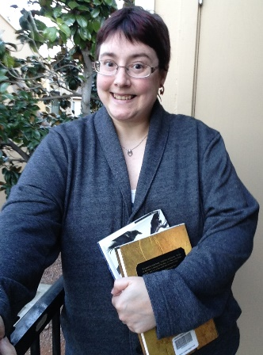

During the 2016 Spring semester the UCSF Archives and Special Collections is hosting two interns:
Jessica Jones
Jessica Jones is our first EXCEL program intern. The UC San Francisco Excellence through Community Engagement & Learning (EXCEL) Program is a clerical/administrative training program which aims to develop the potential workforce in UCSF’s surrounding communities and provide San Francisco residents with access to health-field related employment opportunities. It is a work-based program that uses both classroom and on-the-job training to prepare participants for career path jobs in the healthcare sector. In the past month Jessica who works in the Archives four days a week has successfully completed the State Medical Society Journals assessment and Cholera pamphlets cataloging projects. She is working on rehousing and creating detailed inventory for the Photo Portraits collection which will help preserve these photographs and facilitate their discovery. Jessica will help organize, rehouse and create inventories for newly acquired papers and also learn how to scan and create metadata for materials in diverse formats.
Here is what Jessica wrote for the blog: “I am a mother of two beautiful children ages 1 and 4. I am a San Francisco native and a current intern through the EXCEL Cycle 10 UCSF Medical Administrative Internship. After becoming a mother I realized what I was inspired and motivated by. I have many talents and desires but my main four passions in life are Children, Happiness, Self Love, and Fashion. Due to my natural spirit to connect and adapt with people so well I have a goal to become a professional as a Clinical Social Worker in Pediatrics. I am one step closer to my future by getting my foot in the door within my internship at UCSF. I plan to reach out and advocate for families that lack social and emotional support. I want to make a difference within children and actually give and instill in them extra love, support, and mentoring . Currently I am interning for the Archives and Special Collections, I plan to enrich my own knowledge and gain plenty experience to become an unparalleled asset. I also plan to look into the development of pediatrics department within UCSF. Finally, I am so thankful for this amazing opportunity. My dream is becoming a reality.”
Kristin Daniel
Kristin Daniel first became interested in library science when she was young; when her curiosity, more often than not, led her to find answers in books. The importance of information availability stayed with her throughout her schooling. Her passion was put on hold after she graduated high school in 1998, as economic necessities led her to a decade of service in the retail and hospitality industries. She got the opportunity to return to school and pursue her dream in 2008.
She graduated cum laude from San Francisco State University with a Bachelor’s Degree in English Literature and is currently in her last semester of San Jose State University’s iSchool Masters in Library and Information Science program. Her coursework at SJSU reflects her interest in public librarianship with an emphasis in archives and preservation. Kristin is hopeful that she can serve her community’s information needs with the skills she can learn at her internship at UCSF: practical experience in cataloging, collection processing, and digitization. With so many people turning to digital means of finding information she is a firm proponent of a global library network.
Between being a stay-at-home-mom and a full time grad student, Kristin doesn’t have a lot of time for hobbies. When she can find a few moments to relax, however, she can usually be found reading sci-fi/fantasy novels, exploring San Francisco’s numerous events/attractions, and daydreaming about winning the lottery so she can build a craft studio. A lifelong California resident, Kristin currently resides in San Ramon with her husband and two-year-old son.
Kristin is continuing the project started by previous interns – organizing and creating an inventory of biographical files. She also helps with Quality Control of digital files for the State Medical Society Journals project.
Both Jessica and Kristin are assisting with the survey of the Archives and Special Collections manuscript and university records collections. The inventory and reorganization of these collections will greatly increase intellectual control, department efficiency, and user access.
We are grateful to our interns for their dedication and help!